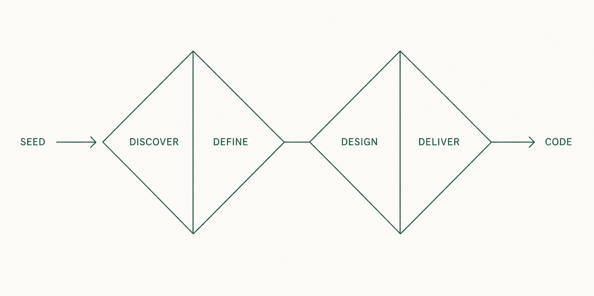

07
7. 실행
6장에서 Seed를 확인했습니다. 실행은 그 Seed를 runtime에 넘겨 실제 코드를 만드는 절차입니다.
7.1 무엇을 하는가
ooo run은 Seed를 검증한 뒤 runtime에 실행을 맡깁니다. 파일 작성과 명령 실행은 runtime이 담당하고, Ouroboros는 순서와 상태를 관리합니다. 입력으로는 6장에서 확인한 Seed가 필요합니다.
7.2 실행 시작
Claude Code 대화창에서 실행합니다.
ooo run정상 결과: 실행이 시작되고 상태 조회에 쓸 ID가 표시됩니다. 실행은 배경에서 진행되므로 시작 즉시 완료된 것이 아닙니다.
7.3 실행 단계

| 단계 | 내용 |
|---|---|
| Discover | 저장소와 환경, 요구사항에서 확인이 필요한 부분을 파악합니다. |
| Define | 무엇을 만들고 무엇을 제외할지 범위를 정합니다. |
| Design | 구조와 구현 순서를 정합니다. |
| Deliver | 파일을 만들고 테스트를 실행합니다. |
이 순서는 이해 없이 구현부터 시작하는 것을 막기 위한 실행 규칙입니다.
7.4 ID 구분
명령마다 출력하는 ID의 역할이 다릅니다. 출력에서 아래 값을 구분해 복사해 둡니다.
| ID | 형태 | 어디서 받나 | 어디에 쓰나 |
|---|---|---|---|
session_id | orch_… | Interview·실행 출력 | ooo status, ooo evaluate, 세션 재개 |
job_id | job_… | 배경 작업 시작 출력 | 배경 작업의 상태와 결과 조회 |
execution_id | exec_… | 실행 시작 출력 | ooo cancel |
auto_session_id | auto_… | ooo auto 출력 | ooo auto --resume |
lineage_id | lin_… | ooo evolve 출력 | 수정 이력 조회, ooo ralph |
7.5 상태 확인
Claude Code 대화창에서 실행합니다.
ooo status <session_id>정상 결과: 현재 단계와 진행 상태가 표시됩니다. 별도 터미널에서 ouroboros monitor를 열면 진행 화면으로 볼 수 있습니다.
7.6 실행 취소
Claude Code 대화창에서 실행합니다.
ooo cancel정상 결과: 진행 중인 실행 목록이 표시되고, 선택하거나 ID를 전달해 취소합니다. 취소 후 ooo status로 상태를 확인합니다.
7.7 실행 완료 기준
- 실행 상태가 완료로 표시된다.
- 작업 폴더에 결과 파일이 생성되어 있다.
- 완료 요약에서 다음 단계에 쓸
session_id를 확보했다. 이 값은 8장에서 사용합니다.